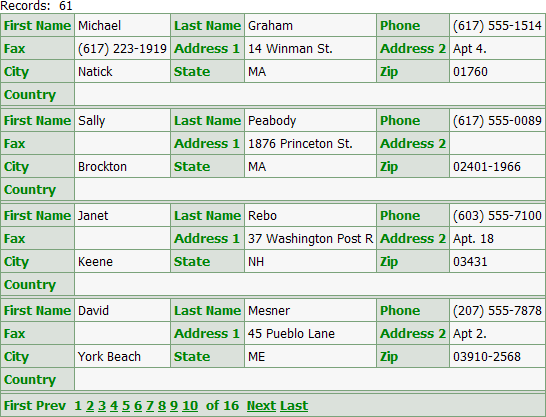
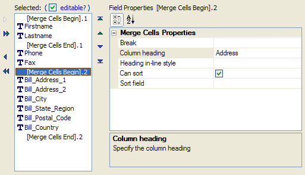
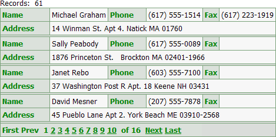
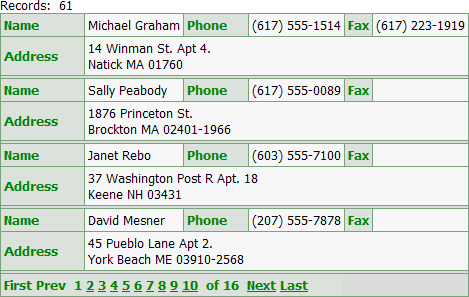

Using Merges for Control Positioning
When designing a dialog component or a grid component with columnar formatting (where the Layout Options > Number of "Layout" Columns property is greater than 1), you may position controls by merging them into groups.
This picture shows a columnar grid with 10 fields. The number of columns is 3.

We insert merge commands to group the firstname and lastname controls, and to group the six address fields. We set the Column heading values for the 2 groups.

This resulting grid looks like this.

Finally, we insert breaks at the end of the Bill_Address_1 and Bill_Address_2 controls.

See Also
Using the Number of "Layout" Columns Feature
Limitations
Web publishing applications only.